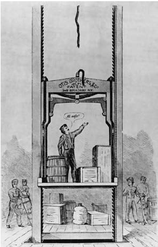
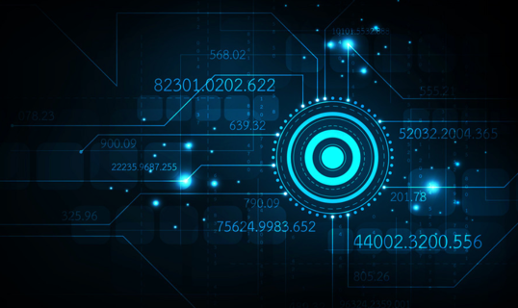
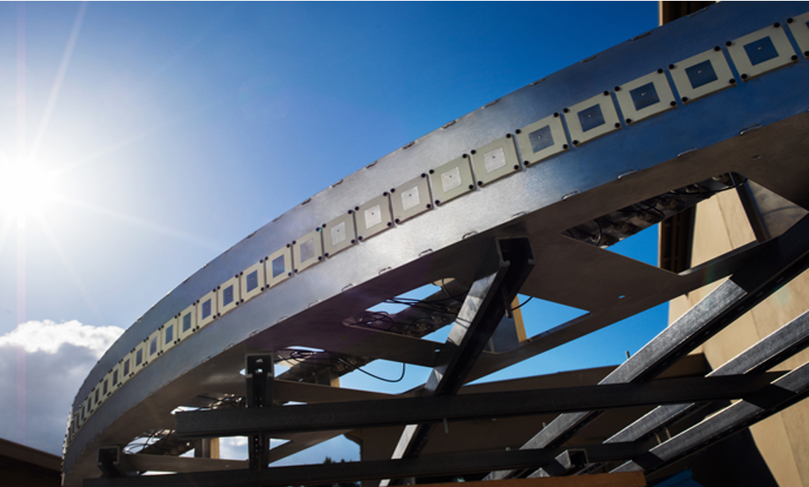
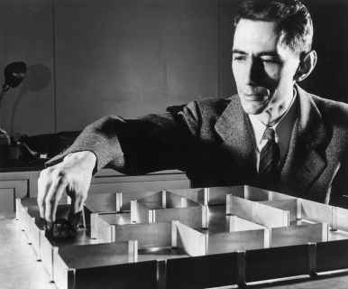

EECS 360: Signals and System Analysis
- Fall 2018, Fall 2019, Fall 2020
- Website: Click Blackboard for the current website.
- Fourier signal analysis (series and transform); linear system analysis (continuous and discrete); z-transforms, analog and digital filter analysis; analysis and design of continuous and discrete time system using MATLAB.
- Prerequisite: EECS 212 and EECS Upper Level Eligibility.

EECS 444: Control Systems
- Spring 2021
- Website: Click Blackboard for the current website.
- An introduction to the modeling, analysis, and design of linear control systems. Topics include mathematical models, feedback concepts, state-space methods, time response, and system stability and controlability in the time and transform domains.
- Prerequisite: EECS 212 and EECS 360.

EECS 664: Introduction to Digital Communication Systems
- Spring 2018
- Website: Click Blackboard for the current website.
- An introduction to building digital communication systems in discrete time. Topics covered include signal spaces, baseband modulation, bandpass modulation, phase-locked loops, carrier phase recovery, symbol timing recovery, and basic performance analysis.
- Prerequisite: EECS 360 and MATH 526 (old EECS 461).

EECS 769: Information Theory
- Fall 2017, Fall 2020, Fall 2021
- Website: Click Canvas for the current website.
- This is the mathematical foundation of operation on information such as source coding, channel coding, and communication. This field was established after the pioneering work by Claude Shannon - his masterpiece, A Mathematical Theory of Communication (1948), one of the most influential works in the history of communications. In this work, Shannon characterized the fundamental limit for reliable communication over a point-to-point communication channel, the so-called channel capacity, and provided the architectural system design for achieving it. The topics covered include necessary mathematical definitions, theorems, and tools to prove Shannon's channel capacity formulae.
- Prerequisite: MATH 526 (old EECS 461) or an equivalent undergraduate probability course.
EECS 800: Inference and Learning
- Summer 2019
- Website: Click Blackboard for the current website.
- The topics covered include Batch and recursive Bayesian filtering, extended and unscented Kalman filtering, particle filtering, various smoothings, non-convex optimization, enhanced gradient descent, stochastic gradient descent, and convergence of machine learning.

EECS 865: Wireless Communication Systems
- Spring 2019, Spring 2020
- Website: Click Blackboard for the current website.
- The theory and practice of the engineering of wireless telecommunication systems. Topics include cellular principles, mobile fading (including Rayleigh, Rician, and other models), diversity, precoding, combining, multiple-input multiple-output (MIMO), OFDM, space-time coding, and current topics of interest will be covered.
- Prerequisite: EECS 861.

EECS 869: Error Control Coding
- Fall 2019
- Website: Click Blackboard for the current website.
- A study of communication channels and the coding problem. An introduction to inference, channel capacity, and linear block codes such as Hamming and Convolutional codes and the Viberbi algorithm are covered. Other topics include iterative (turbo) codes and LDPC codes.
- Prerequisite: EECS: 562 or equivalent.